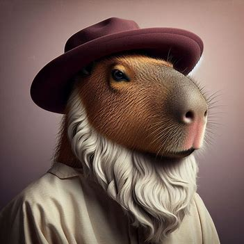

Non de Zeus Marti, ça a marché nous sommmes revenu dans le passé, nous allons pouvoir decourvrir la vérité viens avec moi.
L'Histoire du glorieux Capysar:
Il était une fois, dans la majestueuse Rome antique, un capybara dont le nom résonnait à travers les âges : Jules Capysar. Né dans une famille patricienne, Capysar était destiné à devenir l'un des plus grands leaders que l'Empire romain ait jamais connus.
Dès son jeune âge, Capysar montrait des signes de grandeur. Sa détermination et son intelligence étaient évidentes pour tous ceux qui le rencontraient. Il gravit rapidement les échelons politiques, devenant un brillant général et un orateur charismatique.
Néanmoins, ce qui distinguait vraiment Capysar de tous les autres, c'était sa vision audacieuse pour l'avenir de Rome. Il rêvait d'un empire puissant et uni, où la justice et la prospérité régneraient pour tous. Pour atteindre cet objectif, il dut affronter des adversaires redoutables, à la fois sur les champs de bataille et dans les couloirs du pouvoir.
À travers ses campagnes militaires audacieuses et ses réformes politiques novatrices, Capysar s'éleva au sommet de la politique romaine. Son nom était sur toutes les lèvres, et son influence s'étendait bien au-delà des frontières de Rome. Il était respecté et admiré par ses partisans, et craint par ses ennemis.
Pourtant, malgré sa gloire et sa puissance, Capysar était un capybara de contradictions. Bien qu'il soit un chef impitoyable sur le champ de bataille, il était également un capybara de lettres et un amateur des arts. Il aimait la musique, la poésie et les spectacles grandioses qui divertissaient les masses romaines.
Mais comme beaucoup de grands capybara avant lui, Capysar suscita également la jalousie et l'inquiétude parmi les élites romaines. Ses ambitions démesurées et sa popularité croissante le rendaient vulnérable aux complots et aux conspirations. Finalement, ses ennemis firent un coup audacieux, et Capysar fut trahi par ceux qu'il avait cru être ses alliés les plus proches.
Le destin de Jules Capysar prit fin de manière tragique, mais son héritage perdura bien au-delà de sa mort. Son nom fut gravé dans les annales de l'histoire comme celui d'un capybara qui avait façonné le destin de Rome d'une manière qui ne serait jamais oubliée. Même des siècles après sa disparition, son nom continuait à inspirer et à fasciner ceux qui étudiaient les mystères de l'Empire romain.
L'Histoire du brillant Capystote:
Dans les terres de la Grèce antique, au cœur de la ville d'Athènes, vivait un homme dont la pensée allait façonner le cours de l'histoire : Capystote. Né à Stagira, Capystote était destiné à devenir l'un des plus grands philosophes et penseurs de son temps.
Dès son plus jeune âge, Capystote montrait un penchant pour la réflexion profonde et la quête de vérité. Son esprit curieux l'amenait à questionner le monde qui l'entourait, à observer la nature avec une acuité remarquable et à méditer sur les mystères de l'univers.
Capystote était un érudit polyvalent, explorant une variété de domaines de connaissance, de la logique à la métaphysique en passant par la politique et l'éthique. Son œuvre était vaste et diversifiée, couvrant des sujets allant de la physique à la biologie, et de la rhétorique à la poétique.
Mais ce qui distinguait vraiment Capystote, c'était sa méthode rigoureuse et sa capacité à synthétiser des idées complexes en concepts accessibles. Il était un penseur systématique, cherchant à comprendre les principes fondamentaux qui sous-tendaient l'univers et la nature capybara.
Malgré son engagement envers la recherche intellectuelle, Capystote était également un capybara pragmatique, intéressé par l'application de ses idées à la vie quotidienne. Ses enseignements étaient populaires parmi les élites d'Athènes, et son école, le Lycée, attirait des étudiants du monde entier.
Pourtant, même un esprit aussi brillant que Capystote n'était pas à l'abri des revers et des controverses. Ses idées parfois radicales suscitaient la méfiance parmi certains de ses contemporains, et il fut souvent critiqué pour ses théories novatrices.
Mais malgré les obstacles, Capystote continua à poursuivre sa quête de vérité jusqu'à la fin de sa vie. Son héritage perdura bien au-delà de son époque, influençant des générations de penseurs et façonnant le cours de la pensée occidentale. Son nom reste synonyme de sagesse, de rationalité et de recherche de la connaissance.
L'Histoire du talentueux Capynard De Vinci:
Au cœur de la Renaissance italienne, dans la splendide ville de Florence, vivait un capybara dont le génie allait transcender les limites du temps : Capynard de Vinci. Né dans la petite ville de Vinci, Capynard était destiné à devenir l'un des esprits les plus brillants de son époque.
Dès son plus jeune âge, Capynard montrait un intérêt insatiable pour le monde qui l'entourait. Sa curiosité le poussait à explorer les mystères de la nature, à démonter des machines et à dessiner des esquisses détaillées de tout ce qui capturait son imagination. Il était un véritable polymathe, un homme dont la soif de savoir était inextinguible.
Capynard était non seulement un artiste talentueux, mais aussi un scientifique visionnaire. Ses carnets étaient remplis d'idées révolutionnaires sur l'anatomie humaine, l'astronomie, la botanique et bien d'autres domaines. Il était en avance sur son temps, anticipant des découvertes qui ne seraient faites que des siècles plus tard.
Pourtant, ce qui distinguait vraiment Capynard, c'était sa capacité à voir le monde d'une manière unique. Pour lui, l'art et la science étaient étroitement liés, chacune de ces disciplines enrichissant l'autre. Ses célèbres peintures, telles que "La Joconde" et "La Cène", étaient bien plus que de simples œuvres d'art ; elles étaient des expressions de ses idées les plus profondes sur la nature humaine et le cosmos.
Malgré sa renommée croissante, Capynard était un capybara humble. Il croyait en la collaboration et en la libre circulation des idées, partageant généreusement ses connaissances avec d'autres esprits brillants de son époque. Il était ami avec des penseurs tels que Michel-Ange, Raphaël et Machiavel, et son atelier était un foyer d'innovation et de créativité.
Mais même un esprit aussi brillant que Capynard n'était pas à l'abri des tourments de son époque. Il fut souvent confronté à des défis et des revers, tant sur le plan personnel que professionnel. Cependant, sa détermination et sa passion pour la découverte ne faiblirent jamais.
À la fin de sa vie, Capynard de Vinci laissa derrière lui un héritage qui perdurerait bien au-delà de sa mort. Ses idées révolutionnaires et son œuvre extraordinaire ont inspiré des générations d'artistes, de scientifiques et de penseurs à repousser les frontières de la connaissance humaine. Son nom reste synonyme de créativité, d'ingéniosité et de puissance de l'esprit capybara.